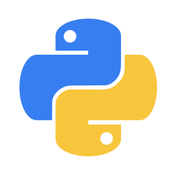
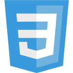
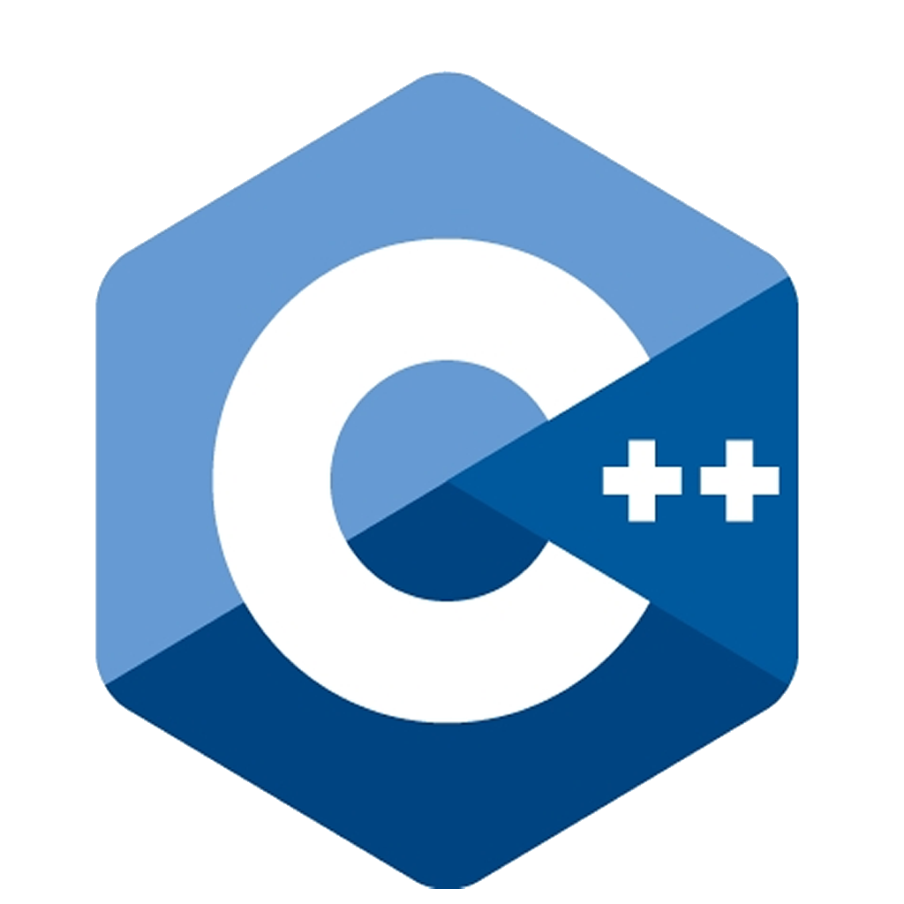
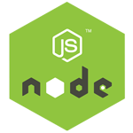
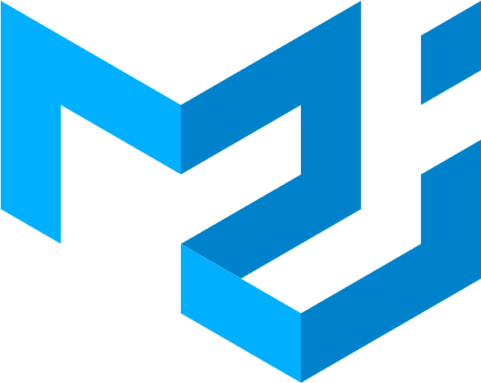
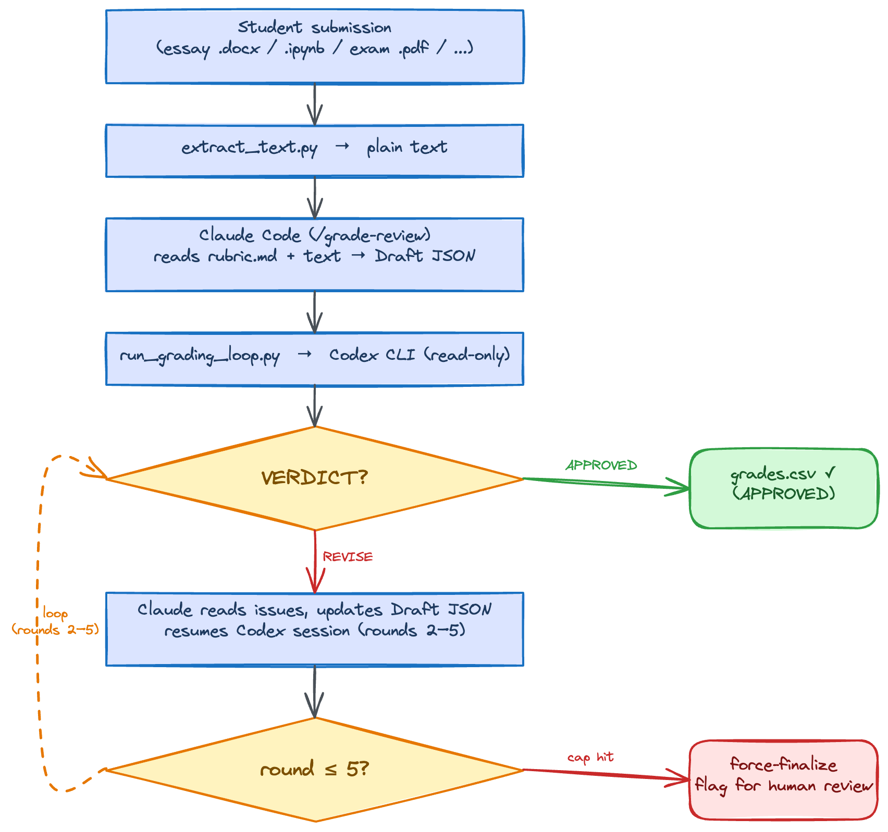

About me
From tinkering with computers at my uncle's internet cafe to building data-driven products at scale, my journey has been guided by curiosity, ownership, and real-world impact.
I am currently pursuing the Master of Information Systems Management - Business Intelligence and Data Analytics (MISM-BIDA) at Carnegie Mellon University, where I focus on how data and AI can power intelligent, human-centered systems.
Before CMU, I worked at BYJU'S across Tutor Tech Horizontal and Exam Prep teams, contributing to microservice optimization, cloud migration, SEO-critical content migration, and product experiences that served millions of learners.
I have won six international hackathons with over $22,000 in prizes through projects like Classly, Vishleshan, Sahayak, and MedBuddy. I am especially motivated by opportunities at the intersection of AI, analytics, and social impact.
What I'm doing
-

Full-Stack Engineering
I build end-to-end products with strong backend architecture, clean APIs, and user-focused frontend experiences.
-

Data and AI Systems
I apply analytics and ML thinking to product and platform problems, with emphasis on measurable impact and robust implementation.
-

Hackathons
I have won six global hackathons and use rapid prototyping to turn ambiguous ideas into production-shaped solutions.
-

Social Impact Products
I enjoy building technology that improves access in education and healthcare through practical, scalable, and inclusive software.
Skills
-
Languages





.png)
Databases
-
Libraries



Tools


.png)


Resume
Education
-
Carnegie Mellon University
2025 - 2026Master of Information Systems Management - Business Intelligence and Data Analytics (MISM-BIDA).
-
Vellore Institute of Technology, Vellore
2019 - 2023B.Tech in Computer Science and Engineering.
-
Air Force School, Kanpur
2016 - 2018 -
Seth Anandram Jaipuria School, Kanpur
2006 - 2016
Experience
-
BYJU'S - Software Engineer (MTS-1)
Oct 2023 - Jul 2025○ Engineered a D2C e-commerce portal handling 200K+ daily users, reducing sales cost by 15% and improving ARPU by 20%.
○ Migrated 10K+ SEO-critical pages from ReactJS to WordPress, driving 2.5x organic traffic growth, 30x page-speed gains, and 40% better lead-to-traffic conversion.
○ Contributed to AWS to GCP migration and platform optimization efforts, contributing to approximately $400K/year in infrastructure savings.
○ Built exam rank prediction workflows for test-prep products with 70%+ predictive accuracy. -
BYJU'S - Software Engineer Intern
Jan 2023 - Sep 2023○ Optimized batching and scheduling microservices while supporting migration of 10+ services to a horizontal architecture.
○ Built comprehensive backend unit tests for scheduling services and handled frontend delivery for batching services.
○ Tech stack: React.js, Node.js, Material UI, MongoDB, Spring Boot, Mockito, and JUnit. -
Virtuality Innoventure (VAPP) - Software Developer Intern
Dec 2022 - Jan 2023○ Designed and implemented frontend interfaces that improved usability and engagement.
○ Executed QA and bug-fix cycles across releases to improve production quality.
○ Audited frontend code for maintainability, standards compliance, and performance. -
QuantaVid LLC - Full Stack Developer Intern
Sep 2021 - Nov 2021○ Developed and optimized frontend architecture for a SaaS video platform.
○ Implemented key user-facing features and resolved client-side defects across releases.
○ Contributed as a founding member of the API team and implemented backend endpoints for reliable data flow.
Achievements
-
○ Won 6 international hackathons with total prize winnings above $22,000.
-
○ Hack APAC by Red Hat - Won 1st prize among 200+ participants.
-
○ Route Mobile RAPID Hackathon - Won 2nd prize among 6,000+ teams.
-
○ Integrate to Disrupt Hackathon by Symbl.ai - Won 2nd prize among 1,900+ teams.
-
○ Build a Modern Data App Hackathon by DataStax - Jury Award for the 2nd most creative, impactful, and fundable project.
-
○ DaeDarus' Hack by KIIT - Won 2nd prize among 800+ participants.
-
○ Access Denied '21 by VIT - Won special category prize among 700+ teams.
-
○ Organized seminars and volunteered for underprivileged communities at the Rotaract Club of VIT.
Portfolio
Blog
I Made Claude and Codex Argue About Grades Until the Workflow Was Actually Good
A Claude Code grading command that pits Claude (grader) against Codex (auditor) in an iterative review loop. 5 rounds max, full audit log, and every cap-hit gets flagged for human review.

TL;DR
I adapted the Claude-Codex iterative review pattern for grading Quiz 2 notebooks. Claude drafts rubric-based scores. Codex audits them in read-only mode. If Codex says
REVISE, Claude updates the draft and resumes the same Codex session. Loop untilAPPROVEDor round 5.Get it in this repo:
.claude/commands/grade-review.mdgrading_scripts/run_grading_loop.pygrading_scripts/extract_notebook.pygrading_scripts/rubric.md
Setup:
- Install Codex CLI (
npm install -g @openai/codex) - Keep the slash command in
.claude/commands/grade-review.md - Run
/grade-review(batch) or/grade-review <notebook_path>(single student)
Use it for: rubric-based grading where submissions can be converted to text (
.ipynb, essays, short-answer exports).Skip it for: tiny batches, fully subjective assessments, or cases where manual grading is faster than orchestration.
Result from the debugging run: the loop surfaced real grading/implementation issues, including a parameter-extraction code bug in a student notebook and multiple orchestration bugs in my own script.
I use Claude Code a lot for TA workflows. The first pass was fast, but I kept seeing the same issue: one model can be consistent, but it is not adversarial. It does not challenge itself.
So I stopped asking one model to be both grader and reviewer. Claude proposes. Codex audits. They go back-and-forth until there is a clean verdict.
The Problem: Single-Model Blindness
When one model both produces and "reviews" a grade, you get coherent output without real pushback.
I kept seeing this pattern:
- Reasonable-looking scores with shaky evidence mapping
- Missed rubric deductions on technical details
- Over-credit when code looked right but variables were wrong
- Reviewer responses that sounded confident but were not strictly machine-parseable
The grading bottleneck was not speed. It was confidence.
The Solution:
/grade-reviewI implemented a project-level Claude slash command:
/grade-review.Claude handles grading and revision. Codex handles auditing. The Python script orchestrates state and writes the final artifacts.
How it works
You: /grade-review Round 1: Claude reads rubric + extracted notebook text -> writes draft JSON scores/rationales -> run_grading_loop.py sends prompt to Codex -> Codex responds VERDICT: APPROVED or VERDICT: REVISE Round 2..N: Claude updates draft from ISSUE lines -> run_grading_loop.py resumes same Codex session -> Codex verifies whether those fixes were actually applied Stop: APPROVED -> append Quiz2_Grades_AI.csv + log final section round == 5 -> append anyway and flag for human reviewThe key mechanics:
- Codex runs in read-only mode
- Resume uses explicit session ID (no
--lastambiguity) - Every round is appended to
grading_log.md
"The point is not to make grading autonomous. The point is to make it auditable and harder to fool."
Before and After
Before: single-pass grading
I would read a notebook, score it, maybe spot-check, and move on. Fast, but fragile. Once you're deep into a batch, consistency drifts.
After: iterative cross-model review
Same grading task, but with an explicit propose-audit-revise loop.
What changed immediately:
- I got structured
ISSUE P<n>: ... | SUGGESTED_SCORE: <n>feedback instead of vague critique - Resume rounds checked whether previous issues were actually fixed
- Stuck cases became visible and reviewable instead of silently drifting into "good enough"
In one concrete case, Codex flagged over-credit on a notebook where predicted hazard used the wrong fitted-variable reference during parameter extraction. That is exactly the kind of subtle mismatch that slips through fast manual review.
Design Decisions
Why static analysis only?
No execution. Grade what the student wrote, not what happened to run once in a notebook state. This avoids giving credit to brittle code that only works due to hidden kernel state.
Why a slash command, not hardcoded script prompts?
The grading behavior lives in
.claude/commands/grade-review.md, so prompt policy is editable and versioned with the course repo.Why iterative, not one-shot?
One-shot audit finds problems. Iterative audit verifies fixes.
Loop semantics:
- Codex flags issues
- Claude revises the draft
- Codex re-checks the revised draft in context
- Repeat until clean or capped
Why session resume?
codex exec resume <session_id>preserves context. Codex remembers what it flagged in prior rounds and can validate whether the latest draft actually addressed those exact points.Why the VERDICT protocol?
The orchestrator needs a deterministic stop signal. Free-form prose is hard to parse safely in automation. The strict ending (
VERDICT: APPROVEDorVERDICT: REVISE) keeps loop control simple and robust.Why a master log?
grading_log.mdis the audit trail: draft table, Codex verdict per round, final scores, round count. If someone asks "why did this student get 8/10?", you can answer with evidence.Technical Implementation
Core pieces:
grading_scripts/extract_notebook.py: converts.ipynbcells to plain text.claude/commands/grade-review.md: grading workflow contract for Claudegrading_scripts/run_grading_loop.py: prompt build, Codex call, verdict parse, CSV/log writesgrading_scripts/rubric.md: canonical rubric text injected into prompts
Outputs:
Quiz2_Grades_AI.csv(final score rows)grading_log.md(full per-student round history)
Operational safeguards:
- Max 5 rounds per student
- CSV-aware resume (skip already graded IDs in batch mode)
- No-op REVISE detection when suggested scores already match current draft
Bugs I Hit (and the fixes)
These were real issues encountered while running the loop.
1) Resume prompt had no state delta
Symptom: Codex repeated prior feedback even after scores changed.
Cause: resume message said "I updated grades" but did not show what changed.
Fix: include a per-problem change summary + full current draft JSON in resume prompt.
"Resume is not magic diff. You have to carry the new state explicitly."
2) No-op REVISE loops
Symptom: Codex re-issued a suggested score that was already applied.
Fix: filter out non-actionable issues; if all suggested scores already match draft, treat as approved.
This is now a safety net, not a primary control path.
When to Use This
Use it when:
- You have enough submissions that consistency drift matters
- Rubric criteria are explicit and can be checked from text/code statically
- You want a paper trail for every grade decision
Do not use it when:
- The rubric is mostly subjective judgment
- You only have a handful of submissions
- You cannot review cap-hit cases manually
How to Start (Without Overengineering)
- Freeze your rubric into one markdown file.
- Force a strict machine-parseable verdict format.
- Ship one-round grading first; confirm parsing and logging.
- Add resume rounds only after round-1 path is stable.
- Add max-round cap + human escalation before batch runs.
You do not need distributed infrastructure. This implementation is local files + one orchestration script.
What's Next
The current version is useful, but obvious upgrades are clear:
- Confidence tagging (
APPROVED-high,APPROVED-low) - Better failure handling and explicit command exit-code guards
- Cost/token metrics per student and per round
- Per-rubric templates for different assignment types
But the core loop already pays off: one model proposes, another challenges, and every decision is logged.
If you run high-stakes, repetitive evaluation, this pattern is practical today: keep the human as final authority, and let two models do structured adversarial pre-review.
P.S. Yes, this post was also drafted using the same pattern. At this point, the process is self-referential by design.
Contact
Let's Build Something Together